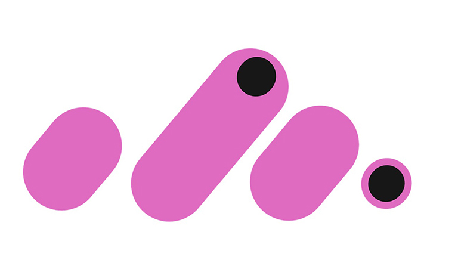
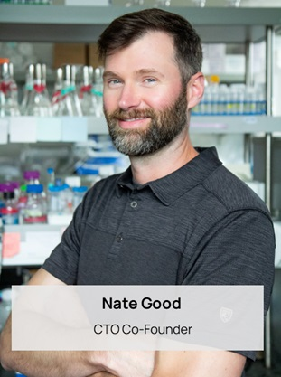

Delivering Low-cost American-made
Rare Earth Metals NOW
RareTerra is reimagining the rare earth supply chain—making it sustainable, secure, and domestically driven by replacing complex hydrometallurgical systems with cleaner, more efficient biological processes.
RareTerra’s mission is to transform rare earth production with biotechnology, delivering low-cost, American-made materials that power clean energy, advanced communications, and consumer technologies. By eliminating toxic chemicals, reducing greenhouse gas emissions, and recycling critical minerals, we are building a circular and sustainable supply chain.
RareTerra harnesses the power of biology to make rare earth production clean, circular, and accessible — fueling the technologies that drive our future.
Meet our Team
Our professional team is here to help you with any questions or concerns.
-



Get in Touch
We'd love to hear from you! Reach out to us for inquiries or collaborations.